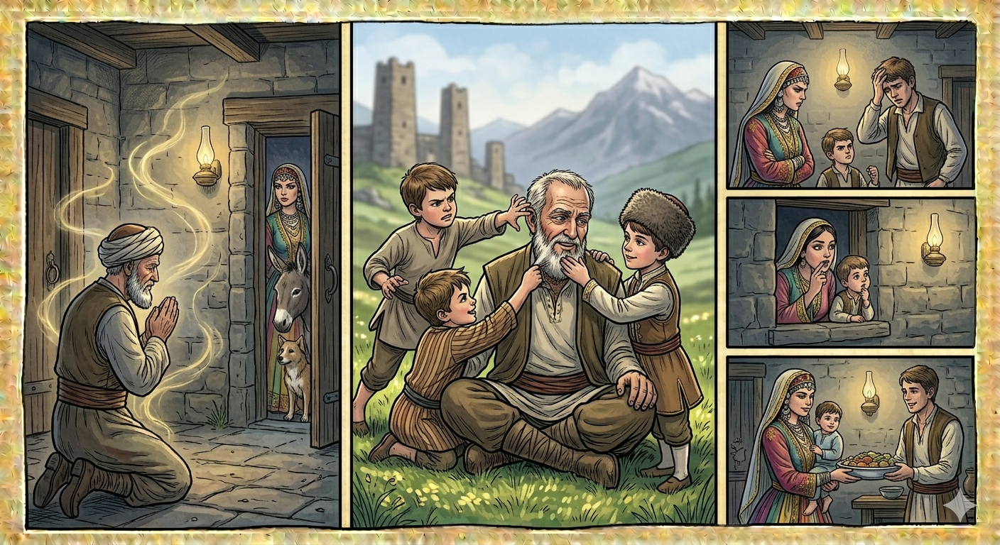

И.А. Дахкильгов. Хьехаме дувцарш - поучительные рассказы-притчи.
И.А. Дахкильгов. Хьехаме дувцарш - поучительные рассказы-притчи. Из ингушского фольклора.

Наьнага хьежжа хул
Гаьннарача замах пайхамараша дийхачоа Даллас жоп луш хиннад. Цу хана нах кхы а Ӏомабенна хиннабацар цхьацца Ӏаьдалаши гӀулакхаши леладе. Масала, уст-да ший нейцийца хьакхаштта къамаьл деш хулар, цу тайпара кхы а хӀамаш хулар. Цу замах хиннад яхаш дувцаш цхьа хӀама да. Цхьан пайхамара хоза а дика а йоӀ кхийна хиннай. Из пайхамар волча цхьан ден вена хьаэттав кхо пайхамар. Зоахалола баьхка хиннаб уж, шоай кхаь воӀа из йоӀ йига дага болаш. ХӀаьта, йиӀий даьга из цаӀ йоацар кхы йоӀ хиннаяц. Зоахалола вена хинна кхоккхе пайхамар цунна дукха везаш хиннавар. Цар юхь Ӏаьрже мегадац цунна. Цудухьа аьннад цо: - Уйла е езаш хӀама да ер. Кхоана хьадувла. Сайрийна цу пайхамара цхьан цӀагӀа чу дӀачубаьхаб ший йоӀ, кхал вир, зуд жӀали. БӀарччача бийсах дуӀаш деш ваьгӀав из пайхамар Даллагар дехаш: “Са йоӀа тара йолаш кхы а ши йоӀ хилийталахь! Са йоӀа тара йолаш кхы а ши йоӀ хилийталахь!” Далла жоп деннад цунна: Ӏуйранна цу цӀагӀара хьаараяьннай цаӀ шоллагӀчох къоасталургйоацаш вӀаший тара йола кхо йоӀ. ШоллагӀча дийнахьа хьаэттаб пайхамараш. Цар къонгашка дӀаеннай уж кхоккхе йоӀ. Цхьа шу даьннача гӀолла цу кхаь йоӀо кхо воӀ ваь хиннав. Кхо йоӀ дӀаенна хинача пайхамара лаьрхӀад: “Уж кхоккхе мишта яхаш я а хьожаргва со, царех сай бокъонцара йоӀ малий а ховргда сона”. Цхьа йоӀ яхача дӀа а этта, цун маьрага хаьттад, сесаг миштай, аьнна. Вокхо ший сесаг могаяьй, бакъда, цхьа гӀалат доал цох аьннад: - Цхьайолча хана чӀоагӀа мух йоагӀа цунга. Цхьаккха дарах ше аьннар мара деш а яц из. Хайнад пайхамара из сенах хьахинна йоӀ я, ший йоӀ из йоацалга. ШоллагӀча а ваха, сесаг хаьттача, из могаяьй, хӀаьта а аьннад: - Цхьа гӀалат-м доал цох: массе хана коанаӀарах ара удаш, дӀа-хьа водар малав хьежаш, йоахараш дукха дезаш хьувзаш хул ер. Из а мичара яьннай хайнад пайхамара. КхоалагӀча метте ер вахача, цхьаккха гӀалат доацаш я, аьнна, могаяьй цигара сесаг: - Ӏалаьмате чӀоагӀа эздел долаш, хоза гӀулакх долаш, эйхье йолаш, эхь кхоабаш, - иштта кхы а дукха дика хӀама оалаш могаяьй. Циггач хайнад пайхамара из ший йоӀ йолга. Цу кхаь сесаго баь кӀаьнкаш а хиннаб вӀаший тара. Уж а ийца, царца бай тӀа ловза Ӏохайнав пайхамар. Виро ваьчо пайхамара бӀарга чу пӀелг Ӏетта хиннаб. Зудо ваьчо пайхамара мекхах ка теха хиннай. ХӀаьта пайхамара йоӀо ваьчо вокха кӀаьнкашта эхь деш хиннад, воккхача сага кӀаьдо кулг хьекхад хиннад, цунна велалуш хиннав. Цу хана денна ховш да, йоах, хьангара хьабоагӀа мухаш ераш, харца лувш, йоахараш долаш, эхь доацаш, йовсара лелаш бола во нах. Кхы а хов хьангара ба эхь-эздел долаш, мерза гӀулакх долаш, Ӏимерза болаш, дика мел йола оамалаш шоаех йоахкаш бола нах а.
РУССКИЙ
Дети рождаются в свою мать
В давние времена бог удовлетворял просьбы пророков. Тогда люди еще не знали многих сегодняшних обычаев и законов. Например, не знали, что зять и тесть не должны вести друг с другом доверительно-интимные беседы. О случившемся в те времена рассказывают следующее: У некоего пророка выросла красивая и воспитанная дочь. Случилось так, что в один и тот же день явились трое пророков, чтобы засватать эту девушку за своих сыновей. Но девушка-то была всего одна, а ее отец хотел уважить просьбы всех троих пришедших пророков. Не хотел он обидеть их отказом, и поэтому сказал: “Дайте подумать. Приходите завтра.” Вечером пророк закрыл в одном доме свою дочь, ослицу и суку. Всю ночь пророк молился и просил у бога: “Сделай так, чтобы появились еще две девушки, похожих на мою дочь. Сделай так, чтобы появились еще две девушки, похожих на мою дочь”. Всевышний внял его просьбе. Утром из дому вышло трое девиц, настолько похожих одна на другую, что невозможно было их различить. На второй день явились пророки, и всех троих девушек отдали за их сыновей. Через три года все трое родили по сыну. Отец девушки решил: “Проведаю всех троих, а заодно узнаю, какая из них есть моя дочь”. Пришел он к одной и спросил ее мужа, что он может сказать о жене. Муж хорошо отозвался о ней, но прибавил: “Иногда она становится упрямой и норовистой. Все делает только по-своему”. Понял пророк, от кого она произошла и что она не его дочь. Пошел он ко второй дочери, и тут ее похвалили, но отметили один недостаток: “Все время бегает за ворота, смотрит, кто куда идет, любит посплетничать”. И тут понял пророк, от кого она. В третьем месте ему расхвалили и сказали: “Очень благородна, услужлива, стеснительна, хорошая хозяйка…” В ней пророк признал свою дочь. И мальчики этих женщин были похожи друг на друга. Взял пророк их всех троих и сел на лужайке поиграться с ними. Рожденный ослицею ткнул старика пальцем в глаз. За ус дернул пророка тот, кого родила сука. Рожденный же от дочери стыдил других мальчиков, гладил деда по лицу и улыбался ему. С тех пор, говорят, стало известно, откуда берутся упрямые, непослушные, бесстыжие… жены. И еще люди знают, откуда прекрасные жены благородного поведения.
ENGLISH
НОХЧИЙН
ПОГОВОРКИ